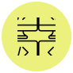
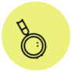
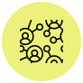
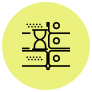
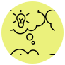

About me
Hi! I am Ankita a product designer from India, based in Canada, working globally. 2+ years in UX/UI design, 10+ years in the fashion design industry. Creativity has always been a huge part of my life! Design isn't just a profession to me, it defines who I am. I design products that bridge the gap between digital and physical experiences. I travel a lot. I love to discover new places around the world. I am also a big time foodie, one of the major reasons I go around the globe is in search of new amazing, delicious, unique, and diverse dishes. I'm not very fond of cooking, though.
Soft [&] Software Skills
Design
UX/UI & visual design with emotions and empathy. I mostly use Figma, Adobe Photoshop [&] Illustrator.
Frontend Development
I do a bit of coding and am experienced in HTML, CSS, & some JS. I love working with Visual Studio code.
Research & Testing
Taking a data-driven by conducting user interviews, surveys, concept & usability testing and more.
Communication
Clear & transparent visual, verbal & written communication with all the stakeholders.
Organise
Systematically organizing and prioritizing all the information and tasks is one of my strengths.
Critical Thinking
Analyzing ideas & data, thinking through solutions by considering alternative systems of thought.
Tool Box
These are some of the tools I love to use